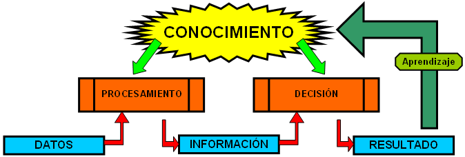
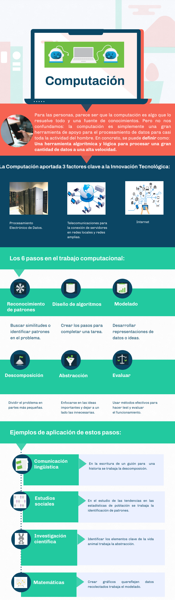
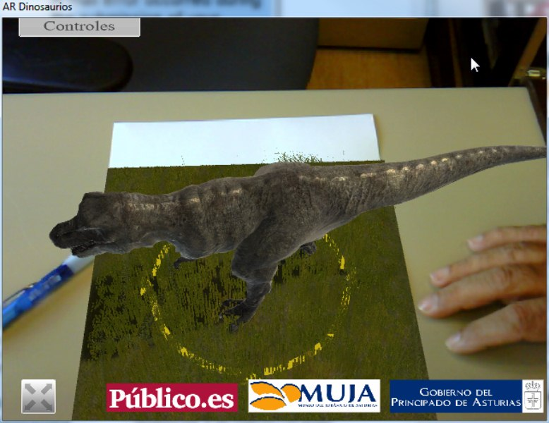

Vamos a trabajar en grupo la siguiente reflexión previa: La sociedad actual está basada en la transmisión de datos, información y conocimiento en todos los aspectos de nuestra actividad humana.
Seguro que alguna vez te has planteado cuánta información sobre ti está presente en esta Sociedad de la Información. Intentad responder en grupo a las siguientes preguntas sobre el caso planteado y anotad vuestra reflexión en respuesta a ellas:
Pensad en una App de moda de las que os ponen en contacto con las amistades y en la que compartís fotos, vídeos, opiniones y comentarios:
¿Cuántos datos creéis que tiene de sus clientes?
¿Cómo creéis que ha accedido a ellos? (pensad alguna técnica por la que los ha conseguido)
¿Qué otras actividades crees que hacen con esos datos? Es decir: ¿Cómo podrían obtener de ellos un beneficio económico como empresa?
¿Qué tipo de empresas pensáis que van buscando estos datos? Poned algún ejemplo de aplicaciones conocidas que funcionen del mismo modo que la aplicación que habéis usado como base del estudio.
Es un proceso de evolución profunda de la vida y las intersecciones entre personas, gobiernos, facultades y organizaciones por el uso intensivo de las tecnologías de la información y la comunicación (TIC), que facilitan la creación, distribución y manipulación de la información y desempeñan un papel esencial en las actividades sociales, culturales y económicas.
¿Quieres una pista?
Recuerda que en Internet existen miles de aplicaciones gratuitas que no te cobran nada por su uso, pero que son empresas que mantienen a sus empleados. ¿De dónde crees que obtiene sus beneficios Whatsapp, Twitter, Instagram, Youtube...?
Amplía la perspectiva
Comparte con tu clase todo lo anotado y ábrete a nuevos detalles que quizás no tuviste en cuenta.
2. ¿Qué conoces tras esta reflexión?
¿Han cambiado las aplicaciones tu conducta?
Todas las técnicas que has encontrado de captación de información (desde aplicaciones hasta servicios web) provocan cambios en nuestras conductas como sociedad. De ahí que para referirnos a estos cambios sociales se emplee el nombre de Sociedad del Conocimiento. ¿Habías pensado antes en la importancia de estos pequeños usos de aplicaciones?
¿Sientes que tu perfil está compartido globalmente?
Internet ha hecho posible la extensión de la comunicación a la casi totalidad del planeta. Es la Globalización del Conocimiento. Incluso, los expertos piensan que esta globalización permite que los Estados y las empresas controlen a la población e influyan sus decisiones y conductas.
Es una innovación de las tecnologías de la información y las comunicaciones en la que el incremento en las transferencias de la información modifica en muchos sentidos la forma en que se desarrollan muchas actividades en la sociedad moderna.
3. La gran biblioteca del mundo
Observa los siguientes casos que te mostramos y reflexiona ¿cuál es el trabajo común de todas estas iniciativas y proyectos?
Periódicos digitales
Actualmente la mayoría de los periódicos tienen sus ediciones digitales y algunos incluso se han creado sólo en su versión on-line.
Wikipedia
Wikipedia es una enciclopedia libre, copyleft y colaborativamente editada lanzada en 2001.
Reporteros sin fronteras
Reporteros sin fronteras trabaja en la promoción y la defensa de la libertad de informar y de ser informado en todo el mundo.
Educación a distancia
Actualmente existen Universidades ofertan estudios on-line. También algunas comunidades autónomas como la nuestra contemplan la educación a distancia como modalidad para obtener títulos oficiales.
¿Qué han permitido todas estas iniciativas?
Compara ahora tu reflexión con el contenido siguiente a continuación.
4. Es un hecho: El conocimiento se difunde
El Conocimiento se distribuye en nuestra sociedad de muchas maneras diferentes. Entre ellas están las vistas arriba: plataformas de conocimiento, portales de instituciones profesionales y patrocinadas a veces por empresas privadas, almacenes de recursos y documentación en formato digital de empresas, asociaciones oficiales sin ánimo de lucro, y universidades y gobiernos. Todas ellas creadas mediante la Computación y a las que accedemos gracias al desarrollo de los SSOO.

Mediante la Computación se han creado aplicaciones que manejan grandes cantidades de Información. Esta información, correctamente tratada y analizada, la procesamos las personas generando así el conocimiento humano que impulsa el avance de nuestra sociedad. Esa es la principal diferencia entre Información y Conocimiento:
Información: Son una serie de datos objetivos, procesados o no, que están preparados para ser utilizados.
Conocimiento: Se produce cuando la mente humana procesa la información que recibe, la mezcla con la experiencia y produce una conclusión nueva en la mente. Por tanto, es un proceso subjetivo.
Tras esto, el siguiente ejercicio te ayudará a aclarar conceptos aquí tratados. Podrás repetirlo todas las veces que necesites.
5. De lo automático y lo humano
Según la información previa que habéis consensuado, reparte las características seleccionando si la afirmación dada pertenece a la Información o al Conocimiento, y pulsa el botón para responder.
Su navegador no es compatible con esta herramienta.
6. Comprueba lo visto
Observa y escucha el siguiente vídeo sobre la Sociedad de la Información para que identifiques después las opciones correctas a cada afirmación:
A continuación, escribe al lado de cada aportación la letra correspondiente 'a', 'b' o 'c' según la correspondencia:
a
Sociedad de la información
b
Sociedad del conocimiento
c
Ambas (se complementan para ello)
7. ¿Y qué tiene que ver la Computación en todo esto?
Hasta ahora hemos visto cómo la información y el conocimiento que se desprende de ella han cambiado la sociedad y, aunque aún no la hemos nombrado, la Computación ha sido el motor que las impulsa.
¿Qué es?
La computación ha sido el gran invento de este siglo el cual ha marcado un cambio en la historia de la humanidad. Se ha convertido en parte integral de la vida personal y profesional y con esto se ha desarrollado una dependencia en dos aspectos: el tecnológico (hardware) y el de programas (software).
¿Cómo influye en la Innovación Tecnológica?
La Innovación es una nueva idea aplicada para crear o mejorar, así que las innovaciones implican un cambio. De este modo, la Computación ha sido la base de la Innovación Tecnológica ya que ha supuesto la aplicación de conocimientos basados en la tecnología para dar como resultado estos cambios mundiales vistos.
Cómo trabaja la Computación

8. La Computación en la realidad
A continuación vas a conocer una de las aplicaciones computacionales que más éxito ha tenido en la sociedad: La Realidad Aumentada.
Lee el artículo que te proponemos y, con tu equipo, responded a las cuestiones:
¿Has jugado a algún videojuego que utilice esta tecnología de Realidad Aumentada (RA)?
¿Es lo mismo Realidad Aumentada que Realidad Virtual?¿Para cuál de ellas necesita sobligatoriamente conectividad a Internet?
¿Cómo crees que os puede ayudar a estudiar la RA?
Lee el artículo
La realidad aumentada es la forma en la que definimos una visión de la realidad en la que se agregan elementos virtuales. Por ejemplo, si disponemos del software necesario y conectividad a Internet, al mirar un edificio singular de cualquier ciudad a través de nuestro móvil o smartphone, el software instalado agrega información sobre la historia, características, etc. del edificio en nuestra pantalla. Es decir, se agrega información a lo que estamos viendo.
¿Cómo funciona? Sin entrar en demasiado detalle, ni plantear un análisis exhaustivo de la tecnología, podríamos decir que:
Un dispositivo con capacidad de leer imágenes (webcam o similar).
Con un software instalado (aquí entra el papel de la Computación).
Lee una imagen en concreto: En algunos caso un código QR (Quick Response Barcode) o un código de barras bidimensional.
La identifica a través de la utilización de dicho software.
Presenta la información asociada (la información que se agregue puede ser textual, icónica, sonora o multimedia).
Supongamos que una alumna o un alumno está leyendo un libro, en el texto pueden aparecer imágenes como la que mostramos a continuación:
Si el niño o la niña vieran esa imagen a través de la pantalla de su ordenador, filtrada por el ojo de la webcam podrían apreciar lo siguiente:

El dinosaurio se mueve, ruge y podemos controlar sus movimientos con nuestro teclado, cambiar la perspectiva desde la que le vemos, etc.. En este caso, al texto en el que se describen las características de un dinosaurio le añadimos, a través de nuestro ordenador imagen, sonido y movimiento.
Posibilidades educativas Evidentemente, acabamos de presentar un sencillo ejemplo sobre su utilización, sin embargo, como ya habrás podido imaginar, las posibilidades que se nos abren son innumerables.
Simulaciones y utilización de modelos 3D Cualquier explicación que realicemos en clase se puede enriquecer con numerosos recursos: vídeos, imágenes, documentación, etc.
La ventaja de estos modelos sobre vídeos u otro tipo de soportes son las posibilidades de interactuar que puede tener el alumnado, la imagen no está cerrada y podremos movernos sin problema dentro de ella (hasta donde los programadores nos dejen).
Visitas a museos, ciudades, etc. Actualmente, cuando realizamos una visita a un museo, preparamos la salida, buscamos información, seleccionamos una serie de actividades, relacionamos todo con los contenidos, creamos una guía, etc. Posteriormente, en el museo, con la ayuda de un guía, una audio guía, el cuaderno de trabajo etc. recibimos información, realizamos actividades, etc.
La realidad aumentada nos va a permitir disponer de toda la información en un móvil con cámara, mostramos el cuadro, la escultura, el edificio, etc. y obtendremos información en pantalla o mediante audio en tiempo real, además, podremos descargar esa información en nuestro dispositivo para poderla utilizar o, si lo deseamos, ser capaces, nosotros mismos, de integrar todos los contenidos.
En este contexto es donde realmente podemos sacar más partido a este tipo de presentación de la información, integrándola con contextos reales. Paseamos, nos movemos y simplemente, presentamos la imagen al móvil y obtenemos la información.
Tampoco debemos olvidar cómo la realidad aumentada nos puede permitir contextualizar un determinado contenido, de manera que si nos encontramos, por ejemplo, ante las ruinas del Teatro romano de Mérida, podríamos ver sobrepuesto cómo debería haber sido en todo su esplendor, o, si paseamos por un museo en el que estemos viendo una exposición sobre dinosaurios, éstos nos pueden ser presentados en su tamaño real, en un mismo punto, sin tenernos que desplazar por distintas salas.
Accesibilidad Como ya habréis podido imaginar, las posibilidad de presentar la información mediante distintos sistemas de comunicación puede favorecer la accesibilidad a los distintos contenidos.
Un cuadro, con nuestro Smartphone apuntando a él, puede ser identificado y ofrecernos toda una descripción sonora del mismo. Igualmente, si estamos ante ese mismo cuadro, la misma descripción sonora puede aparecer como un texto a pié de pantalla. Con la ventaja de que, después, podremos consultar esos mismo contenidos accediendo a otra capa de nuestra aplicación o enviándolos a nuestro PC.
Recreación de hechos históricos Situamos un plano de una ciudad o una localización geográfica y aplicamos la realidad aumentada, de esta forma podremos ver el desarrollo de hechos históricos a través de líneas temporales sobre las que podremos actuar.
La construcción de una catedral, el desarrollo de una ciudad, la evolución del Motín de Aranjuez, los movimientos de tropas de la Batalla de Bailén,… todo accesible desde distintos planos y perspectivas, añadiendo imágenes e información textual, identificando protagonistas, accidentes geográficos, etc.
Conclusión La realidad aumentada es una experiencia que ya es posible vivir en los centros docentes, si bien, queda todavía un gran camino por recorrer gracias a sus innumerables posibilidades.
La ingente cantidad de información que se produce en Internet convierte en imposibles las tareas de procesarla y filtrarla automáticamente.
Por eso se convierte en fundamental aprender a valorar la fiabilidad de las fuentes de información para así estar bien y corectamente informados. Aquí te proporcionamos algunos criterios para ello:
Autoría
Asegúrate que la información que utilizas proviene de especialistas en la materia: como personal científico o investigador, docentes, autores de reconocido prestigio, etc.; o de personas cercanas a una situación si se trata de un acontecimiento o suceso.
Las informaciones anónimas no suelen ser fiables.
Procedencia de la información
Tener en cuenta la procedencia es esencial para un contenido válido. Normalmente son fuentes fiables las publicaciones científicas, los libros de texto, los sitios web especializados y los que cuentan con la garantía de una organización que vele por la verificabilidad.
Es importante asegurar que no exista ninguna intencionalidad de conseguir un fin concreto por parte de la persona que la proporciona. En este sentido es fiable que se muestre el contacto de los responsables o el equipo de personas del que formen parte.
Hay que valorar el contenido con pensamiento crítico teniendo en cuenta que esté bien argumentado, que sea preciso, que esté contrastado empíricamente y que tenga fuentes bibliográficas fiables.
Una característica que garantiza un buen contenido es que tenga DOI. Consulta qué es el DOI de un artículo haciendo clic aquí.
Información actualizada
Hay que buscar que se muestre la fecha de última actualización (asegurando así que no es información obsoleta) y es conveniente que explique la periodicidad con la que se actualiza el contenido.
Referencias
Se debe valorar que incluya cita de otros autores, bibliografía para contrastar información y faciliar la búsqueda de contenidos, así como el uso de un lenguaje adecuado y comprensible.
¡Creamos nuestro portfolio de aprendizaje!
Para la realización de las reflexiones de nuestro aprendizaje a los largo de las secciones vamos a utilizar un blog.
El blog es una herramienta esencial de reflexión que te puede ayudar a profundizar en todo lo que vayas haciendo en la materia a lo largo del curso, y te invita a la autoevaluación de tus propios procesos de aprendizaje. Te va a permitir dar a conocer tus tareas, escribir sobre ellas y por tanto, reflexionar sobre tu proceso de aprendizaje, volcando tus propios recursos y experiencias aplicadas hasta ahora. Además, con un diario-blog a modo de portfolio personal, permitirás al profesorado hacer el seguimiento de tu curso, que vea tus progresos, tus logros.
Sigue a continuación los siguientes pasos y reflexiones para crear tu blog y las posteriores entradas:
Cuatro recomendaciones que debes tener en cuenta:
1.- Para crear el blog
Utiliza tu correo electrónico habitual en el aula (cuenta de gmail).
Ponle un título significativo, como "Computación y programación de XXX(tu nombre)" o algo similar. Es importante que elijas un nombre que no sea largo y que sea original y atractivo, vinculado en lo posible con esta asignatura.
Puedes encontrarte con que tu nombre haya sido ya registrado o sea muy parecido a alguno ya existente. Prueba con otros.
Escoge inicialmente una plantilla sencilla, luego la puedes cambiar y experimentar con diseños más avanzados.
Si puedes elegir, elige una imagen de cabecera para tu blog que sea atractiva y vinculada a la asignatura.
No uses fondos llamativos que dificulten la lectura de contenidos.
2.- Reglas de estilo
Presta especial cuidado a la expresión y ortografía:
Tu blog será público y leído por mucha gente. Revisa y corrige cualquier texto antes de publicar, casi siempre se cuelan erratas y no nos damos cuenta. Puedes ayudarte del corrector que incorpora el propio editor de texto que utilices o del propio del blog, incluso de alguna web que ofrezca un corrector ortográfico on-line.
Consejos para crear y redactar en un blog:
Usar un lenguaje directo, sencillo y conciso.
Limitar las frases a un máximo de unas 20 palabras
Limitar las oraciones a una idea por párrafo.
Limitar los párrafos a un máximo de 5 líneas.
Organizar el contenido según el estilo de pirámide invertida —de mayor a menor interés
Escribir en un lenguaje llano y sencillo —cercano a la lengua hablada.
Usar la voz activa; evitar el uso de jerga y clichés (cuando haya que usar siglas, dar la versión completa).
Abreviar el texto omitiendo palabras que no aportan significado, por ejemplo, “como lo habíamos dicho anteriormente”
Facilitar la lectura dejando abundantes espacios en blanco y evitando el uso de diferentes tipos de letra excepto para subtítulos.
A la hora de utilizar en nuestro blog o página web, una imagen de terceros (es decir que no somos nosotros los propietarios) debemos citar adecuadamente la fuente de donde hemos extraído la imagen. Para ello sigue este ejemplo:
Fíjate en la imagen anterior, como verás al pie de la foto aparece una mención al sitio donde se encuentra, al autor y a la licencia con la que se ha compartido.
El sitio lo enlazamos con la página donde hemos encontrado la imagen, se indica el autor (en caso de que lo tenga) y, por último, la licencia con la que se ha publicado la imagen (que se enlaza con la página correspondiente donde se explican los detalles de esa licencia concreta).
Cuando uses recursos que no son tuyos es importante que hagas algo similar.
4.- Reflexionar sobre tus tareas
Tu blog te va a permitir ser consciente de tu propio aprendizaje.
A la hora de escribir un artículo, debes reflexionar sobre la tarea que se te ha encomendado. Siguiendo la escalera de la metacognición los paso a seguir son: qué has aprendido, cómo lo has aprendido, para qué te ha servido y en qué otras ocasiones puedes usar ese conocimiento adquirido.
 Recuerda que en Internet existen miles de aplicaciones gratuitas que no te cobran nada por su uso, pero que son empresas que mantienen a sus empleados. ¿De dónde crees que obtiene sus beneficios Whatsapp, Twitter, Instagram, Youtube...?
Recuerda que en Internet existen miles de aplicaciones gratuitas que no te cobran nada por su uso, pero que son empresas que mantienen a sus empleados. ¿De dónde crees que obtiene sus beneficios Whatsapp, Twitter, Instagram, Youtube...?
 Asegúrate que la información que utilizas proviene de especialistas en la materia: como personal científico o investigador, docentes, autores de reconocido prestigio, etc.; o de personas cercanas a una situación si se trata de un acontecimiento o suceso.
Asegúrate que la información que utilizas proviene de especialistas en la materia: como personal científico o investigador, docentes, autores de reconocido prestigio, etc.; o de personas cercanas a una situación si se trata de un acontecimiento o suceso. Hay que valorar el contenido con pensamiento crítico teniendo en cuenta que esté bien argumentado, que sea preciso, que esté contrastado empíricamente y que tenga fuentes bibliográficas fiables.
Hay que valorar el contenido con pensamiento crítico teniendo en cuenta que esté bien argumentado, que sea preciso, que esté contrastado empíricamente y que tenga fuentes bibliográficas fiables.
.jpg "Blog")